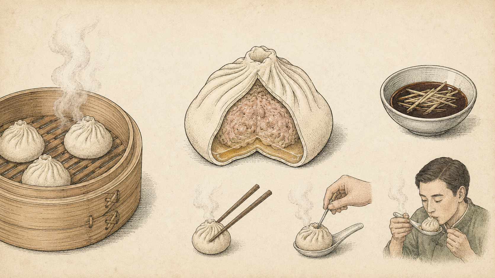

← Bitepedia

小笼包图鉴
THE ANATOMY OF XIAOLONGBAO · NANXIANG 1871
竹笼蒸制
Bamboo Steamer
薄如蝉翼之皮
Thin Translucent Skin
十八道收口褶
18 Pleats · Traditional Closure
鲜肉馅心
Savory Pork Filling
金汤如琥珀
Golden Aspic Soup
镇江香醋
Zhenjiang Black Vinegar
一 · 轻提包顶
Lift gently by the crown
二 · 戳口透气
Poke a hole, release steam
三 · 先饮其汤
Drink the soup, then eat
Tap any food to drill in
Drill into
鲜肉馅
皮冻汁水
镇江香醋